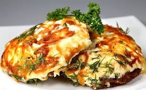

Мясо с сыром по-французки
Мясо по-французски было придумано французским поваром Урбеном Дюбуа специально для графа Алексея Орлова.
Изначально блюдо называлось "Телятина по-орловски", но впоследствии рецепт был упрощен и сейчас блюдо из запеченных слоев мяса, картофеля, лука и сыра известно нам как "Мясо по-французски".
Продукты:
Свинина (ошеек) - 1,2 кг,
Картофель - 1 кг,
Лук репчатый - 2 шт,
Сыр российский - 250 г,
Майонез - 50 г,
Соль - по вкусу,
Перец - по вкусу,
Масло растительное - для смазывания формы.
Как приготовить мясо по-французски:
Шаг1: Берем свиную шею, нарезаем её стейками толщиной примерно 1 см. Раскладываем на рабочей поверхности и приправляем солью и перцем с обеих сторон.
Шаг2: Картофель очищаем и нарезаем ломтиками толщиной примерно полсантиметра.
Шаг3: Лук нарезаем кольцами.
Шаг4: Сыр натираем на терке.
Шаг5: Слегка смазываем форму для запекания растительным маслом и выкладываем в нее слоями подготовленные ингредиенты. Слои идут в следующей последовательности: мясо, картошка (не забудьте её подсолить), майонез, лук.
Отправляем мясо по-французски в заранее разогретую до 200 градусов духовку. Запекаем мясо с картофелем в духовке 40 минут.
Шаг6: Самое время покрыть мясо по-французски сыром и поместить мясо с картошкой, луком и сыром в духовку ещё минут 10, чтобы сыр как следует расплавился.
После этого мясо по-французски можно подавать на стол.
Ссылка на источник откуда была взята информация: https://www.russianfood.com/recipes/recipe.php?rid=144579
Автор: Ален Кутняшенко...
Група: TITpv20